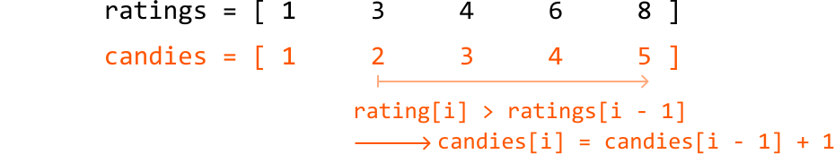
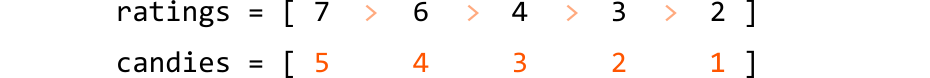
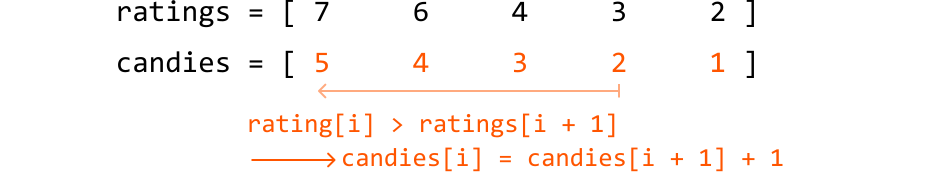
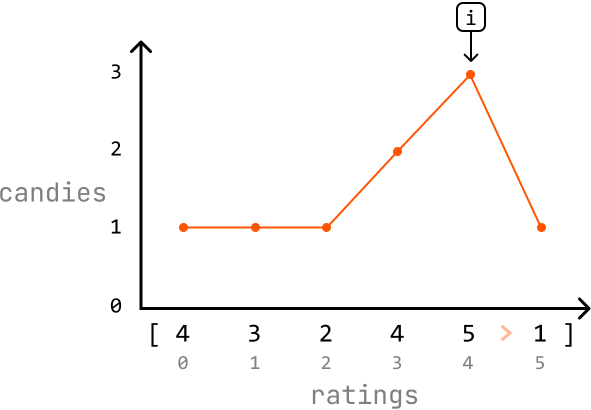
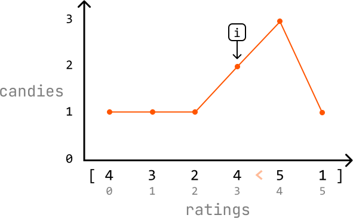
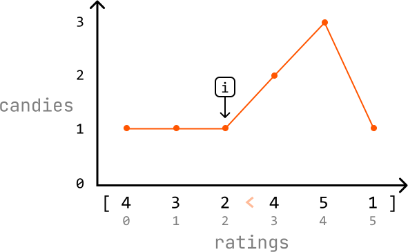

Candies
MediumYou teach a class of children sitting in a row, each of whom has a rating based on their performance. You want to distribute candies to the children while abiding by the following rules:
- Each child must receive at least one candy.
- If two children sit next to each other, the child with the higher rating must receive more candies.
Determine the minimum number of candies you need to distribute to satisfy these conditions.
Example 1:
Input: ratings = [4, 3, 2, 4, 5, 1]
Output: 12
Explanation: You can distribute candies to each child as follows: [3, 2, 1, 2, 3, 1].
Example 2:
Input: ratings = [1, 3, 3]
Output: 4
Explanation: You can distribute candies to each child as follows: [1, 2, 1].
Intuition
For starters, we know we need to give at least 1 candy to each of the n children to satisfy the first requirement of this problem. As for the other requirement, let's start off by considering a few specific cases.
Uniform ratings
Consider the situation where all children have the same rating. Since no child has a higher rating than another, we can give each child one candy to meet both requirements.
![Image represents a simple data structure example showing two parallel arrays, likely in a programming context. The top array, labeled 'ratings,' contains five elements, each with a value of '2,' separated by the '==' operator, suggesting comparison or equality checks. The bottom array, labeled 'candies,' also contains five elements, each with a value of '1' (displayed in orange). The arrays are arranged vertically, with 'ratings' above 'candies,' implying a potential relationship between the two datasets. The numbers within the square brackets indicate array elements, and the overall structure suggests a one-to-one correspondence between the elements of the 'ratings' and 'candies' arrays, where each rating of 2 is associated with one candy.](images/16_03_candies-img-113ad1a2.svg)
Increasing ratings
Now, consider the case where the children’s ratings are in strictly increasing order. Here, each child should receive one more candy than their left-side neighbor.
![Image represents two horizontal, one-dimensional arrays of numerical data. The top array, labeled 'ratings = [1 < 3 < 4 < 6 < 8]', contains the numbers 1, 3, 4, 6, and 8, arranged sequentially within square brackets. The numbers are separated by the 'less than' symbol (<), indicating a sorted ascending order. The bottom array, labeled 'candies = [1 2 3 4 5]', displays the numbers 1, 2, 3, 4, and 5, also within square brackets, but without any separating symbols, suggesting a simple sequence. The numbers in the 'candies' array are rendered in orange, while those in the 'ratings' array are in black, except for the '<' symbols which are in a lighter orange. There is no explicit connection or information flow visually depicted between the two arrays; they are presented independently, implying a potential relationship or comparison between the two datasets that is not directly shown in the image itself.](images/16_03_candies-img-3f7d6be5.svg)
The first child gets one candy because they have no left-side neighbor, and a smaller rating than their right-side neighbor. Each subsequent child has a higher rating than their left-side neighbor, so gets one more candy than that neighbor.

ratings[i - 1]` is shown, suggesting that the algorithm iterates through the `ratings` list, comparing each element to its preceding element. If the condition is true (the current rating is greater than the previous rating), the subsequent line `candies[i] = candies[i - 1] + 1` indicates that the corresponding element in the `candies` list is incremented by 1. This implies that the number of candies increases only when the rating increases compared to the previous rating. The overall diagram visualizes a conditional update of the `candies` list based on the values in the `ratings` list."/>Decreasing ratings
Here, each child needs to receive one more candy than their right-side neighbor.

'), suggesting a descending order or a comparison between consecutive elements. The bottom array, labeled 'candies = ', displays the integer sequence [5, 4, 3, 2, 1], also in descending order, with the numbers rendered in orange, while the numbers in the 'ratings' array are in black, except for the orange arrows. The two arrays are vertically aligned, implying a potential relationship or correlation between the corresponding elements in each list, possibly illustrating a data structure or a pattern in a coding context."/>This is the same as the previous case, but in reverse. To populate the candies array in reverse, we start with the child furthest to the right, giving them one candy. Moving leftward, we give each child one more candy than their right-side neighbor:

ratings[i + 1]` is shown in orange text, signifying that the algorithm compares consecutive elements in the `ratings` array. If this condition is true (meaning a rating is greater than the next one), the subsequent line, `candies[i] = candies[i + 1] + 1`, in orange text, shows that the corresponding element in the `candies` array is updated by adding 1 to the value of the next element in the `candies` array. This suggests a process where the number of candies assigned is dependent on the relative ranking of ratings, with higher ratings potentially receiving more candies than their lower-rated neighbors."/>Non-uniform ratings
Unlike previous cases, in a non-uniform distribution of ratings, children can have higher ratings than their left-side neighbor, right-side neighbor, both neighbors, or neither. This makes handling non-uniform ratings more complex.
What if we can handle these cases separately? Specifically, we could use:
-
One pass to ensure children with a higher rating than their left-side neighbor get more candy (handle increasing ratings).
-
A second pass to ensure children with a higher rating than their right-side neighbor get more candy (handle decreasing ratings).
This allows us to apply the logic we used for increasing and decreasing ratings in two separate passes. Let’s see if this strategy works over the following example, starting with an initial distribution of 1 candy for each child to ensure we meet the first requirement of this problem:
![Image represents a line graph illustrating a relationship between 'ratings' and 'candies'. The horizontal axis (x-axis) is labeled 'ratings' and displays a sequence of numbers within square brackets: [4, 3, 2, 4, 5, 1], representing different rating values. The vertical axis (y-axis) is labeled 'candies' and shows a scale from 0 to 3, indicating the quantity of candies. A horizontal line at 'candies = 1' connects six orange data points, each corresponding to a rating value on the x-axis. This visual representation suggests a constant number of candies (one) regardless of the rating value. The graph's structure is simple, with clear axis labels and a straightforward linear relationship between the variables, showing no correlation between the number of candies and the ratings.](images/16_03_candies-img-d1e80753.svg)
First pass: handle increasing ratings
Iterate through the ratings array and, for each child, check if they have a higher rating than their left-side neighbor (if ratings[i] > ratings[i - 1]). Start from index 1 since the child at index 0 doesn’t have a left-side neighbor.
-
If a child's rating is higher than their left-side neighbor's rating, make sure they have at least one more candy than their left-side neighbor
(candies[i] = candies[i - 1] + 1). -
Otherwise, just continue to the next child’s rating.
We can see how this process updates the candy distribution below:
![Image represents a Cartesian coordinate system illustrating a simple data relationship. The horizontal axis, labeled 'ratings,' displays a sequence of numerical ratings: 4, 3, 2, 4, 5, 1, represented along the x-axis with corresponding numerical markers (0, 1, 2, 3, 4, 5) below. The vertical axis, labeled 'candies,' represents a quantity, with values 0, 1, 2, and 3 marked along the y-axis. A horizontal line at y=1 connects six orange dots, each positioned above a rating value on the x-axis. This visually indicates that regardless of the rating (4, 3, 2, 4, 5, or 1), the number of candies remains constant at one. A small black square containing an 'i' is positioned above the data line, with a downward-pointing arrow suggesting it provides additional information or context about the data presented. The x-axis values are enclosed in square brackets, '[ ]', and a right-pointing arrow symbol '>' is placed between the first two rating values (4 and 3).](images/16_03_candies-img-ce3e6286.svg)
![Image represents a line graph illustrating a data set. The horizontal axis is labeled 'ratings' and shows a sequence of numbers from 4 to 1, representing rating values. The vertical axis is labeled 'candies' and shows a scale from 0 to 3, likely representing the quantity or count of candies. A horizontal line at 'candies = 1' connects six data points, each corresponding to a rating value. The data points are represented by orange circles. The x-coordinates of these points are [4, 3, 2, 4, 5, 1] respectively, and their y-coordinate is consistently 1. A small black square containing the letter 'i' is positioned above the data point at rating 2, possibly indicating an information point or annotation related to that specific data point. The x-axis values are presented within square brackets `[ ]`, suggesting a list or array of rating values. A small right-pointing arrow is placed between the rating values 3 and 2, possibly indicating the direction of data flow or sequence.](images/16_03_candies-img-9b152478.svg)
![Image represents a line graph illustrating a relationship between 'ratings' and 'candies'. The horizontal axis displays 'ratings', showing values from 4 to 1, represented as [4, 3, 2, 4, 5, 1] within square brackets. The vertical axis represents 'candies', ranging from 0 to 3. An orange line connects data points, showing the number of candies corresponding to each rating. The line starts at (4,1), remains at a value of 1 for ratings 3 and 2, peaks at (4,2) for the third rating, drops to (5,1) for the fourth rating, and remains at 1 for the final rating of 1. A small black square labeled 'i' is positioned above the peak of the line, with a downward-pointing arrow indicating a possible annotation or additional information related to the highest point on the graph (rating 4, candies 2).](images/16_03_candies-img-85735e3b.svg)
![Image represents a line graph illustrating the relationship between 'ratings' and 'candies'. The horizontal axis (x-axis) is labeled 'ratings' and displays numerical values [4, 3, 2, 4, 5, 1] enclosed in square brackets. The vertical axis (y-axis) is labeled 'candies' and shows values from 0 to 3. An orange line connects data points representing the number of candies corresponding to each rating. The points show that the number of candies starts at 1 for a rating of 4, remains at 1 for ratings of 3 and 2, increases to 2 for a rating of 4, peaks at 3 for a rating of 5, and finally drops to 1 for a rating of 1. A small square box labeled 'i' is positioned above the highest point on the graph, with an arrow pointing downwards to that point, possibly indicating additional information or a key data point.](images/16_03_candies-img-e7e314f7.svg)
![Image represents a line graph illustrating the relationship between 'ratings' (x-axis) and 'candies' (y-axis). The x-axis shows ratings values ranging from 4 to 1, with corresponding numerical indices [0, 1, 2, 3, 4, 5] displayed below. The y-axis represents the number of candies, ranging from 0 to 3. An orange line connects data points, showing the number of candies associated with each rating. The points indicate that at ratings 4 (index 0) and 3 (index 1), there is 1 candy; at rating 2 (index 2), there is also 1 candy; at rating 4 (index 3), there are 2 candies; at rating 5 (index 4), there are 3 candies; and finally, at rating 1 (index 5), there is 1 candy. A small black square with an 'i' inside is positioned to the upper right, with a downward-pointing arrow connecting it to the last data point on the graph, suggesting additional information or context related to that specific data point might be available.](images/16_03_candies-img-8cc62b6e.svg)
Second pass: handle decreasing ratings
Iterate through the ratings array in reverse and, for each child, check if they have a higher rating than their right-side neighbor (if ratings[i] > ratings[i + 1]). Start at index 4 since the child at index 5 (the last child) doesn’t have a right-side neighbor.
-
If a child's rating is higher than their right-side neighbor's rating, make sure they have one more candy than that neighbor. Note that because we already did one pass through the
candiesarray, they might already have more candies than their right-side neighbor, in which case the current amount of candy they have is sufficient. -
Otherwise, continue to the next child’s rating.
We can see how this process updates the candy distribution below:

1]. The vertical axis (y-axis) represents 'candies', with values ranging from 0 to 3. An orange line connects data points, showing the number of candies corresponding to each rating. The points are (0,1), (1,1), (2,1), (3,2), (4,3), and (5,1). A small black square labeled 'i' is positioned above the graph, with an arrow pointing downwards towards the data point at (4,3), possibly indicating additional information or a highlight. The graph visually depicts a non-linear relationship, where the number of candies increases initially with ratings, peaks at a rating of 4, and then decreases."/>
0, 31, 22, 43, 54, 15] suggesting a possible array or list structure. The vertical axis (y-axis) represents 'candies', with values ranging from 0 to 3. An orange line connects data points, showing the number of candies corresponding to each rating. The points show that the number of candies remains constant at 1 for ratings 4, 3, and 2, then increases to 2 for rating 4, peaks at 3 for rating 5, and finally drops to 1 for rating 1. A small information icon ('i' in a square) points to the data point (43, 2), possibly highlighting a specific data point of interest or an anomaly."/>
0 31 22 < 43 54 15]. The vertical axis (y-axis) represents 'candies', with values from 0 to 3. An orange line connects data points, showing the number of candies corresponding to each rating. The line starts at (4,1), remains at a constant value of 1 until (2,1), then increases sharply to (4,2), peaks at (5,3), and finally drops to (1,1). A small black square labeled 'i' points down to the point (2,1) on the graph, possibly indicating a specific data point of interest or a change in trend."/>![Image represents a line graph illustrating the relationship between candy ratings and the number of candies. The horizontal axis, labeled 'ratings,' displays a sequence of ratings represented as a list `[4, 3, 2, 4, 5, 1]`, with each number corresponding to a data point. The vertical axis, labeled 'candies,' represents the quantity of candies, ranging from 0 to 3. An orange line connects data points, showing the number of candies associated with each rating. The points are (4,1), (3,2), (2,1), (4,2), (5,3), and (1,1). A small downward-pointing arrow with an 'i' inside a box is positioned above the point (3,2), possibly indicating additional information or a key data point. The graph visually demonstrates a non-linear relationship between ratings and the number of candies, with the number of candies fluctuating across different rating values.](images/16_03_candies-img-6b500407.svg)
![Image represents a line graph illustrating a relationship between 'ratings' and 'candies'. The horizontal axis displays 'ratings', with values [4, 3, 2, 4, 5, 1] marked below, each value having a corresponding subscript index [0, 1, 2, 3, 4, 5] indicating the position in the sequence. The vertical axis represents 'candies', ranging from 0 to 3. An orange line connects data points, showing the number of candies corresponding to each rating. The points are (0,3), (1,2), (2,1), (3,2), (4,3), and (5,1). A small square with an 'i' inside is positioned above the first data point (0,3), suggesting additional information might be available. The overall graph depicts a non-linear relationship, where the number of candies fluctuates with changes in ratings.](images/16_03_candies-img-7777abbe.svg)
At the end of the second pass, each child should have the correct number of candies. Now, we just need to return the sum of all the candies in the candies array.
The solution we came up with is a greedy solution because it satisfies the greedy choice property: we make a locally optimal choice for the current child by only considering the ratings of their immediate neighbors, without worrying about the ratings of other children.
How can we be sure this strategy works? Over our two passes, we ensure both the left-side and right-side neighbors of each child are considered when distributing candies. This guarantees that the solution meets the problem's requirements.
[Interactive code editor — visit bytebytego.com to run]
Implementation
from typing import List
def candies(ratings: List[int]) -> int:
n = len(ratings)
# Ensure each child starts with 1 candy.
candies = [1] * n
# First pass: for each child, ensure the child has more candies than their
# left-side neighbor if the current child's rating is higher.
for i in range(1, n):
if ratings[i] > ratings[i - 1]:
candies[i] = candies[i - 1] + 1
# Second pass: for each child, ensure the child has more candies than their
# right-side neighbor if the current child's rating is higher.
for i in range(n - 2, -1, -1):
if ratings[i] > ratings[i + 1]:
# If the current child already has more candies than their right-side
# neighbor, keep the higher amount.
candies[i] = max(candies[i], candies[i + 1] + 1)
return sum(candies)
export function candies(ratings) {
const n = ratings.length
const candies = new Array(n).fill(1)
// First pass: left to right
for (let i = 1; i < n; i++) {
if (ratings[i] > ratings[i - 1]) {
candies[i] = candies[i - 1] + 1
}
}
// Second pass: right to left
for (let i = n - 2; i >= 0; i--) {
if (ratings[i] > ratings[i + 1]) {
candies[i] = Math.max(candies[i], candies[i + 1] + 1)
}
}
return candies.reduce((sum, c) => sum + c, 0)
}
import java.util.ArrayList;
public class Main {
public static int candies(ArrayList ratings) {
int n = ratings.size();
// Ensure each child starts with 1 candy.
int[] candies = new int[n];
for (int i = 0; i < n; i++) {
candies[i] = 1;
}
// First pass: for each child, ensure the child has more candies than their
// left-side neighbor if the current child's rating is higher.
for (int i = 1; i < n; i++) {
if (ratings.get(i) > ratings.get(i - 1)) {
candies[i] = candies[i - 1] + 1;
}
}
// Second pass: for each child, ensure the child has more candies than their
// right-side neighbor if the current child's rating is higher.
for (int i = n - 2; i >= 0; i--) {
if (ratings.get(i) > ratings.get(i + 1)) {
// If the current child already has more candies than their right-side
// neighbor, keep the higher amount.
candies[i] = Math.max(candies[i], candies[i + 1] + 1);
}
}
int total = 0;
for (int c : candies) {
total += c;
}
return total;
}
}
Complexity Analysis
Time complexity: The time complexity of candies is O(n) because we perform two passes over the nums array.
Space complexity: The space complexity is O(n) due to the space taken up by the candies array.